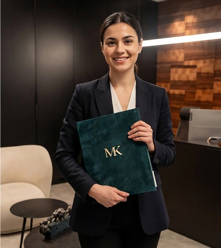

Семейный адвокат
в Израиле
Развод, дети, алименты, раздел имущества и другие семейные вопросы. Ведём дела на русском языке и берём общение со второй стороной на себя.
Разбираем ситуацию до начала работы и говорим, что в ней реально можно сделать.


Рассказать,
что происходит:
Во многих семейных спорах перед подачей иска сначала открывается процедура урегулирования спора и проходят встречи в подразделении помощи при суде. На этот период действует временное ограничение на подачу части исков; порядок предусматривает исключения и срочные меры. То есть попытка договориться встроена в саму процедуру.
Даже когда супруги договорились обо всём и хотят «просто оформить» развод, интересы у них остаются разными. На первом разговоре мы проговариваем, как в вашем случае будет устроено представительство: от этого зависит, будет ли соглашение устойчивым.
В Израиле выбор инстанции и момент обращения могут иметь значение для отдельных семейных требований. Компетенция суда по семейным делам и религиозного суда зависит от вида требования, семейного статуса сторон и уже начатых процедур.
Поэтому до подачи документов полезно определить процессуальный маршрут конкретного дела — это делается по обстоятельствам, а не по общему правилу.
Когда ступенчатая процедура получения статуса связана с браком и продолжается, а отношения в это время распадаются, — процедура может быть прервана.
Дальнейшее урегулирование статуса в такой ситуации идёт по отдельному порядку, а часть случаев рассматривается межведомственной комиссией по гуманитарным основаниям. Это уже не семейное дело, и вести его нужно параллельно с ним, а не после.

Свидетельства о браке, рождении, разводе, судебные решения других стран нужно приводить в вид, пригодный для израильского производства. Проверим форму документов и то, что потребуется дополнительно.
Квартира здесь, счёт там, наследники в третьей стране — для наших клиентов обычная картина. Такие дела требуют отдельного разбора: где оформлять, что признаётся, какие документы понадобятся.
Мы ведём иммиграционные и семейные дела в одном офисе, поэтому такие пересечения разбираем целиком, а не отправляем клиента к двум адвокатам.
Если нужно подтвердить родство — порядок и последствия различаются в зависимости от того, для чего это делается.

Работаем с клиентами по всему Израилю. Часть встреч и согласований можно проводить дистанционно.
семейными делами


Адвокат Михаэль Коберг зарегистрирован в Коллегии адвокатов Израиля — лицензию можно проверить в официальном реестре. Работа начинается с договора: в нём заранее зафиксировано, за что отвечает офис, а что зависит от инстанций.
Да. Ступенчатая процедура МВД распространяется как на официально зарегистрированных супругов, так и на пары, состоящие в гражданском браке (ידועים בציבור). Важно документально подтвердить реальность отношений и совместного проживания. Конкретный маршрут зависит от вашей ситуации — уточните при первом обращении.
Нет, это принципиально разные вещи. ДНК-тест в иммиграционном контексте используется исключительно для подтверждения биологического родства — например, отцовства или связи с гражданином Израиля. Он не доказывает принадлежность к еврейскому народу и не является основанием для репатриации сам по себе. Кроме того, для МВД нужен юридически оформленный тест — обычный медицинский анализ не подойдёт.
Стоимость зависит от вида и сложности дела. После первичного разбора ситуации мы объясняем условия сопровождения, что именно входит в работу офиса и какие этапы предстоят. Напишите нам — расскажем подробнее применительно к вашему случаю.
Нет. Мы работаем с клиентами по всему Израилю. Консультации проводим онлайн или в офисе. В отдельных случаях возможен выезд к клиенту — формат согласуется индивидуально при первом обращении.
Стараемся ответить в день обращения. У каждого клиента есть общий WhatsApp-чат с командой офиса — это значит, что ваш вопрос не зависит от того, занят ли один конкретный сотрудник. В праздничные дни время ответа может увеличиться — мы предупреждаем об этом заранее.
Адвокат Михаэль Коберг зарегистрирован в Коллегии адвокатов Израиля. Вы можете проверить его лицензию в официальном реестре — ссылка на профиль есть на странице команды. У нас официальный сайт, реальный офис и возможность очной встречи до принятия какого-либо решения.
Материал проверен адвокатом Михаэлем Кобергом
Лицензия адвоката в официальном реестре Коллегии адвокатов Израиля
Последняя юридическая проверка: 28.07.2026
Страница носит справочный характер и описывает направления работы офиса. Она не является юридической консультацией и не учитывает обстоятельств конкретного дела. Порядок и практика периодически меняются — актуальность уточняется при обращении.
Последнее обновление материала: 28.07.2026


что происходит